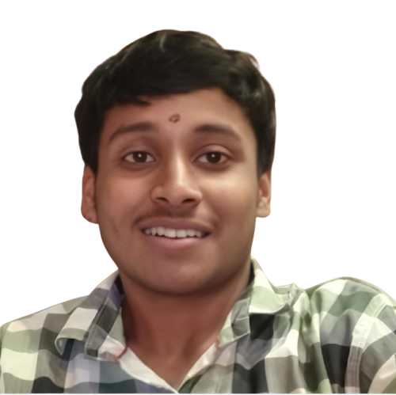
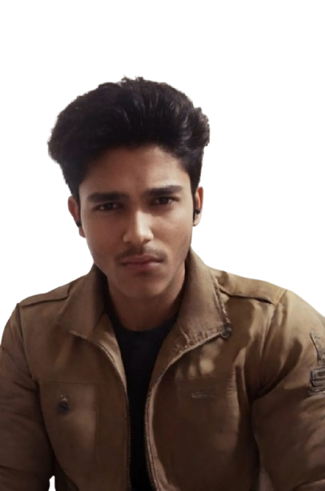

AI-DRIVEN BIOMETRIC ACCESS CONTROL SYSTEM
SECURE. FAST. INTELLIGENT.
The TRIO LOCK Intelligence Layer runs on a standard Python platform, handling user recognition and decision-making. It features a Tkinter-based interface, with OpenCV processing live video for facial detection and Speech Recognition listening for the command "Open the door." The TensorFlow/Keras model maps the 128-point facial vector and compares it with the authorized database. Upon achieving ≥80% face match and successful voice verification, Python transmits an 'Unlock' signal to the hardware layer via PySerial.
The Embedded Layer directly controls the physical door lock using an Arduino UNO microcontroller, awaiting digital commands from Python. Once the command is received, the Servo Motor rotates to unlock the door, the Green LED illuminates, and the Buzzer confirms 'Access Granted.' For security, the Automatic Relock Protocol engages 3 seconds later, returning the lock to its secure position.
The user launches the program; the GUI, camera, and microphone activate and begin real-time monitoring.
The system listens for "Open the door", captures the user's face, and verifies identity. Access proceeds only if face match ≥ 80% and the command is correct.
On successful authentication, Python sends an unlock signal to Arduino; the Servo Motor opens the door, and the green LED with buzzer confirms access.
The emergency password "1234" can unlock the door if biometrics fail, and after 3 seconds the system automatically re-locks the door.
Face + Voice + Password = Near-zero unauthorized access.
≈0.3s unlock with 99.9% accurate recognition.
AI security built with only ~₹526 hardware.
Door auto-locks after 3 seconds—no user mistakes.

Department of Diploma in CSE (Second year)
Department of Diploma in CSE (Second year)

Department of Diploma in CSE (Second year)